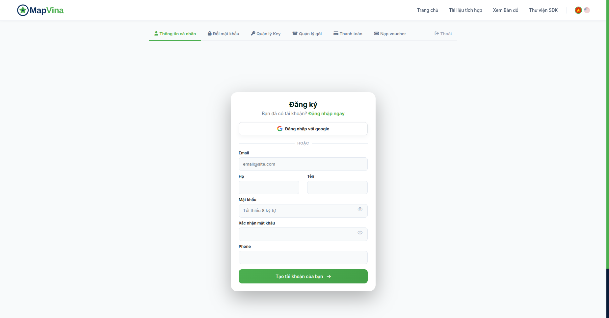
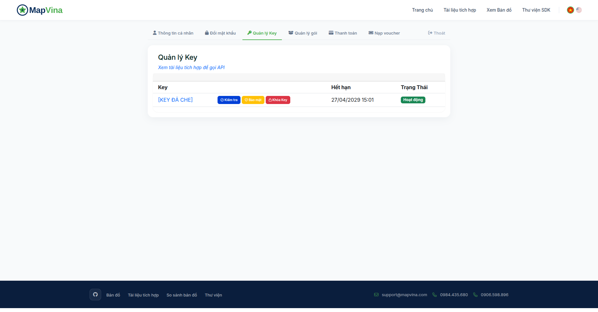
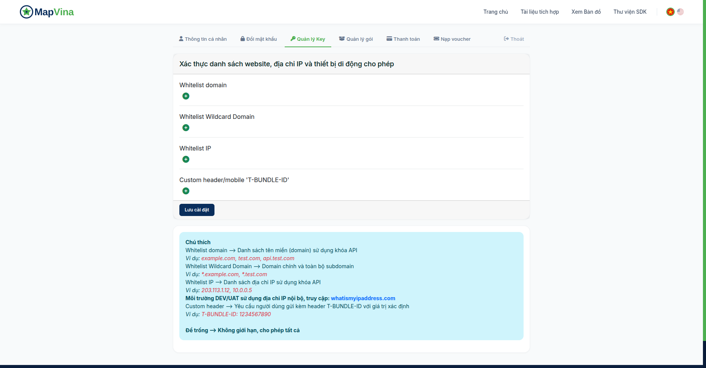
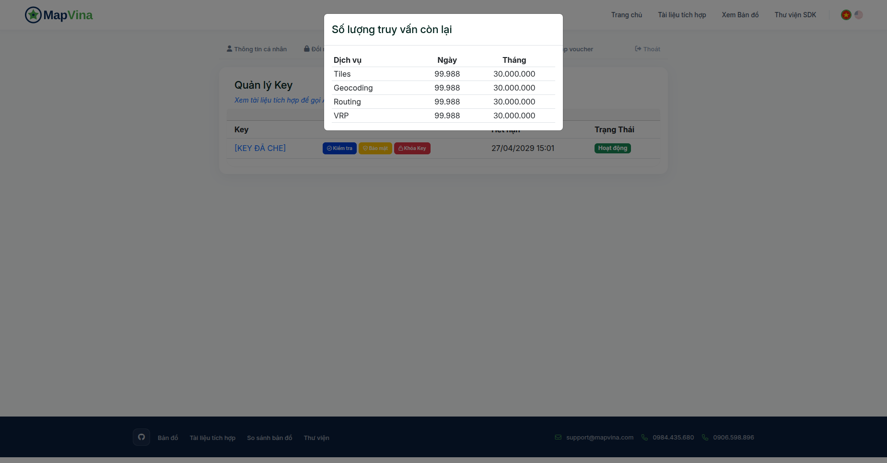

Một ô địa chỉ tốt không nên bắt khách hàng nhập riêng số nhà, tên đường, phường, tỉnh rồi vẫn phải chờ nhân viên gọi lại xác nhận. Cách dễ dùng hơn là để khách gõ vài chữ, chọn một gợi ý và nhận ngay địa chỉ đầy đủ cùng tọa độ.
Trong hướng dẫn này, chúng ta sẽ làm đúng luồng đó bằng một file HTML duy nhất. Không cần Node.js, npm, framework hay bước build. File mẫu đã có HTML, CSS, JavaScript và public_key, vì vậy có thể tải về rồi mở để thử ngay. Sau khi hiểu cách hoạt động, bạn chỉ cần chép ba phần tương ứng vào website của mình.
Demo sử dụng hai API của Mapvina: Autocomplete để lấy danh sách gợi ý trong lúc người dùng gõ và Place Detail để lấy thông tin đầy đủ sau khi họ chọn một địa điểm.[1][2]
Trong gói mã nguồn, mở file index.html bằng Chrome hoặc Chromium. Gõ thử Landmark 81, Nguyễn Huệ hoặc một địa chỉ bạn thường dùng. Sau khoảng 350 mili giây, danh sách gợi ý sẽ xuất hiện. Bấm vào một kết quả để xem địa chỉ, Place ID và tọa độ.
Nếu trình duyệt không cho gọi API khi mở file trực tiếp bằng file://, hãy mở terminal tại thư mục vừa giải nén và chạy một web server tĩnh:
python3 -m http.server 8080Sau đó truy cập http://127.0.0.1:8080. Python ở đây chỉ dùng để phục vụ file tĩnh trên máy; demo vẫn là JavaScript chạy hoàn toàn trong trình duyệt, không có backend Node.js.
public_key có sẵn giúp người đọc thử nhanh nhưng có hạn mức. Khi đưa chức năng này lên website thật, hãy dùng key phù hợp với tài khoản của bạn và thiết lập giới hạn domain.
Mở trang đăng ký Mapvina. Bạn có thể đăng nhập bằng Google hoặc điền email, họ tên, mật khẩu và số điện thoại theo biểu mẫu.[3]

Sau khi tạo tài khoản, đăng nhập vào trang quản lý. Bạn không cần hoàn thành bước này để thử file với public_key, nhưng sẽ cần tài khoản và key riêng nếu muốn dùng tính năng trên website của doanh nghiệp.
Vào mục “Quản lý Key” hoặc mở trực tiếp trang quản lý key. Giao diện hiển thị key, ngày hết hạn, trạng thái và các thao tác kiểm tra, bảo mật hoặc khóa key.[4]

Không chụp ảnh hoặc đưa key thật vào GitHub. Trong dự án JavaScript chạy ở trình duyệt, key frontend luôn có thể được người dùng xem qua DevTools. Vì thế không đặt private key hay server key vào file HTML. Cách bảo vệ phù hợp ở đây là dùng key dành cho frontend, giới hạn domain được phép gọi và theo dõi hạn mức.
Bấm “Bảo mật” tại key muốn cấu hình. Giao diện có các nhóm Whitelist domain, Whitelist Wildcard Domain, Whitelist IP và T-BUNDLE-ID.[4]

Với demo gọi trực tiếp từ trình duyệt, domain website là phần cần quan tâm. Hãy thêm đúng hostname sẽ chạy ứng dụng, lưu cấu hình rồi thử cả từ domain hợp lệ và một nguồn không nằm trong danh sách. Đừng sao chép domain minh họa trong ảnh.
Nếu website có nhiều môi trường như production, staging và trang thử nghiệm, hãy liệt kê chúng có chủ đích. Không nên để key hoàn toàn không giới hạn chỉ vì cấu hình whitelist chưa thuận tiện.
index.html gồm những gì?Mẫu được gói trong một file để người mới có thể đọc từ trên xuống dưới:
index.html
├── phần <style>: giao diện ô tìm kiếm và danh sách gợi ý
├── phần <body>: input, trạng thái, danh sách và kết quả đã chọn
└── phần <script>: gọi Autocomplete và Place DetailKhi đưa vào dự án thật, bạn có thể tách CSS sang style.css và JavaScript sang app.js. Việc để chung một file chỉ nhằm giúp chạy thử nhanh; nó không bắt buộc bạn phải giữ cấu trúc đó.
Trong phần HTML, các phần tử chính là:
<input id="address" type="search" autocomplete="off">
<p id="status" role="status" aria-live="polite"></p>
<ul id="suggestions"></ul>
<section id="selection" hidden>
<dd id="selected-address"></dd>
<dd id="selected-id"></dd>
<dd id="selected-coordinates"></dd>
</section>status cho người dùng biết ứng dụng đang chờ, đang tìm hay gặp lỗi. suggestions chứa các nút gợi ý. selection chỉ hiện sau khi Place Detail trả về thông tin của địa điểm được chọn.
Mọi request trong demo đi qua hàm api(). Hàm này tạo URL đúng endpoint, thêm key và hai cờ địa chỉ hành chính:
async function api(path, signal) {
const local = new URL(path, 'https://example.invalid');
const endpoint = local.pathname === '/api/autocomplete'
? 'autocomplete'
: 'details';
const url = new URL(
`https://maps.mapvina.com/api/v2/place/${endpoint}/json`
);
url.search = local.search;
url.searchParams.set('key', 'public_key');
url.searchParams.set('new_admin', 'true');
url.searchParams.set('include_old_admin', 'true');
if (endpoint === 'autocomplete') {
url.searchParams.set('size', '5');
}
const response = await fetch(url, { signal });
const data = await response.json();
if (!response.ok || !['OK', 'ZERO_RESULTS'].includes(data.status)) {
throw new Error(data.error_message || 'Không thể tải dữ liệu.');
}
return data;
}new_admin=true yêu cầu dữ liệu theo địa giới mới. include_old_admin=true yêu cầu trả thêm thông tin địa chỉ cũ khi có.[1] Không nên hiểu rằng mọi kết quả đều chắc chắn có đủ cả hai dạng địa chỉ.
Khi người dùng gõ, demo không gọi API ngay theo từng phím. Nó chờ 350 mili giây:
input.addEventListener('input', () => {
const token = invalidate();
const query = input.value.trim();
if (query.length < 3) {
status.textContent = 'Nhập ít nhất 3 ký tự để tìm địa chỉ.';
return;
}
status.textContent = 'Đang chờ bạn nhập xong…';
timer = setTimeout(() => search(query, token), 350);
});Cách chờ người dùng ngừng gõ được gọi là debounce. Nếu khách nhập một địa chỉ dài, ứng dụng không gửi request cho từng ký tự. Bạn có thể thay đổi 350 ms sau khi thử trên thiết bị và mạng thật, nhưng không nên bỏ debounce.
Mẫu cũng chỉ bắt đầu tìm từ ba ký tự và giới hạn năm gợi ý. Đây là lựa chọn của giao diện demo, không phải giới hạn bắt buộc của Mapvina.
Giả sử người dùng gõ “Nguyễn”, request thứ nhất được gửi đi. Ngay sau đó họ gõ tiếp “Nguyễn Huệ”, request thứ hai được gửi. Nếu request thứ nhất về chậm hơn, một đoạn code đơn giản có thể hiển thị danh sách cũ lên trên kết quả mới.
Demo giải quyết bằng hai lớp. AbortController hủy request đang chờ, còn biến revision đánh dấu phiên tìm kiếm hiện tại. Dù request cũ không hủy kịp, kết quả của nó cũng bị bỏ qua.
function invalidate() {
clearTimeout(timer);
controller?.abort();
revision += 1;
selection.hidden = true;
suggestions.replaceChildren();
return revision;
}Hủy request ở trình duyệt chủ yếu giúp giao diện không xử lý dữ liệu thừa. Nó không đảm bảo request chưa tới máy chủ hoặc không bị tính vào hạn mức, vì vậy debounce vẫn cần thiết.
Kết quả API không được ghép thẳng vào innerHTML. Demo tạo nút bằng DOM và đưa nội dung vào textContent:
for (const prediction of data.predictions) {
const item = document.createElement('li');
const button = document.createElement('button');
button.type = 'button';
button.textContent = prediction.description;
button.addEventListener('click', () => choose(prediction));
item.append(button);
suggestions.append(item);
}Mỗi gợi ý là một nút nên người dùng có thể dùng Tab và Enter để chọn. Phím Escape đóng danh sách. Một sản phẩm hoàn chỉnh có thể bổ sung điều hướng bằng phím mũi tên và mô hình ARIA combobox đầy đủ, nhưng cấu trúc này đã dễ tích hợp hơn một danh sách chỉ xử lý click.
Không tự động chọn kết quả đầu tiên. Hai địa điểm có tên giống nhau có thể nằm ở tỉnh khác nhau; người dùng cần nhìn địa chỉ và tự xác nhận.
Autocomplete phù hợp để hiển thị gợi ý nhanh, nhưng không nên coi dòng mô tả là toàn bộ dữ liệu địa chỉ. Khi người dùng chọn, demo lấy place_id rồi gọi Place Detail.[2]
const data = await api(
`/api/details?${new URLSearchParams({
place_id: prediction.place_id
})}`,
request.signal
);
const place = data.result;
const location = place.geometry?.location;
selectedAddress.textContent =
place.formatted_address || place.name || prediction.description;
selectedId.textContent = place.place_id;
selectedCoordinates.textContent = location
? `${location.lat}, ${location.lng}`
: 'Không có tọa độ';Code dùng optional chaining vì response thực tế có thể thiếu một trường. Trước khi lưu đơn hàng, nên kiểm tra tọa độ có phải số hợp lệ hay không và địa chỉ có đủ cho nghiệp vụ của bạn hay không.
Nếu người dùng chọn một địa điểm rồi sửa lại chữ trong ô tìm kiếm, invalidate() lập tức ẩn kết quả đã chọn. Điều này tránh lỗi văn bản đã đổi nhưng form vẫn giữ tọa độ cũ.
Khi lưu dữ liệu, nên tách riêng chuỗi người dùng gõ, địa chỉ đã chọn, Place ID, tọa độ và ghi chú như số căn hộ, tầng hoặc cổng giao hàng. Không đưa tên khách, số điện thoại hoặc mã đơn vào truy vấn tìm địa chỉ nếu chúng không cần cho việc tìm kiếm.
Bạn không cần chép nguyên giao diện demo. Cách nhanh nhất là:
public_key thành key frontend của bạn.formatted_address, place_id, lat và lng vào các trường ẩn của form hoặc state của ứng dụng.Nếu website sử dụng React, Vue hay một framework khác, logic vẫn giống nhau: debounce input, hủy request cũ, render gợi ý, gọi Place Detail khi chọn và xóa selection nếu người dùng sửa chuỗi. File JavaScript thuần giúp nhìn rõ luồng trước khi chuyển nó thành component.
Hãy thử nhiều loại dữ liệu hơn một địa danh nổi tiếng:
Mở DevTools và xem tab Network. Bạn sẽ thấy trình duyệt gọi trực tiếp maps.mapvina.com. Đây cũng là lý do không được đặt private key trong mã frontend. Nếu gặp lỗi 429, đừng retry liên tục; hãy kiểm tra debounce, số lần component được khởi tạo và hạn mức key.
Nếu endpoint trả HTTP thành công nhưng trường status báo lỗi, code vẫn phải coi lần gọi đó là không thành công. Demo đã kiểm tra cả HTTP status và application status.
Tại trang Quản lý Key, bấm “Kiểm tra” để mở bảng “Số lượng truy vấn còn lại”. Giao diện có các nhóm dịch vụ và cột Ngày, Tháng.[4]

Đây là số lượt còn lại, không phải biểu đồ lịch sử request theo từng ngày. Nếu cần thống kê chi tiết cho website, bạn có thể ghi nhận sự kiện ở lớp analytics của frontend hoặc tại backend hiện có của doanh nghiệp, nhưng không đưa key và địa chỉ đầy đủ vào log phân tích.
Nếu lưu lượng tăng bất thường, trước hết hãy kiểm tra xem ô input có bị gắn sự kiện nhiều lần, trang có render lặp, request có retry vô hạn hay không. Sau đó mới đối chiếu với hạn mức tài khoản.
JavaScript thuần giúp tích hợp nhanh, nhưng cần hiểu giới hạn của cách gọi trực tiếp từ trình duyệt:
Nếu nghiệp vụ yêu cầu giấu hoàn toàn credential, áp dụng quota riêng theo người dùng hoặc kiểm soát request chặt hơn, lúc đó mới cân nhắc proxy qua backend. Với một website cần tích hợp nhanh bằng key frontend đã giới hạn domain, bản JavaScript thuần là điểm bắt đầu dễ hiểu và dễ ghép nhất.
Luồng cốt lõi chỉ gồm hai request: Autocomplete khi người dùng gõ và Place Detail khi họ chọn. Phần quyết định trải nghiệm lại nằm ở những chi tiết xung quanh: chờ người dùng nhập xong, hủy request cũ, không hiển thị phản hồi lỗi thời, không giữ tọa độ sau khi văn bản đã thay đổi và cấu hình key đúng với môi trường chạy.
Hãy mở index.html, thử bằng public_key, sau đó chép phần cần thiết vào form của bạn. Khi chuyển sang key riêng, giới hạn domain và kiểm tra hạn mức trước khi mở cho người dùng thật.
[1] https://docs.mapvina.com/api-integration/autocomplete/v2
[2] https://docs.mapvina.com/api-integration/place-detail/v2